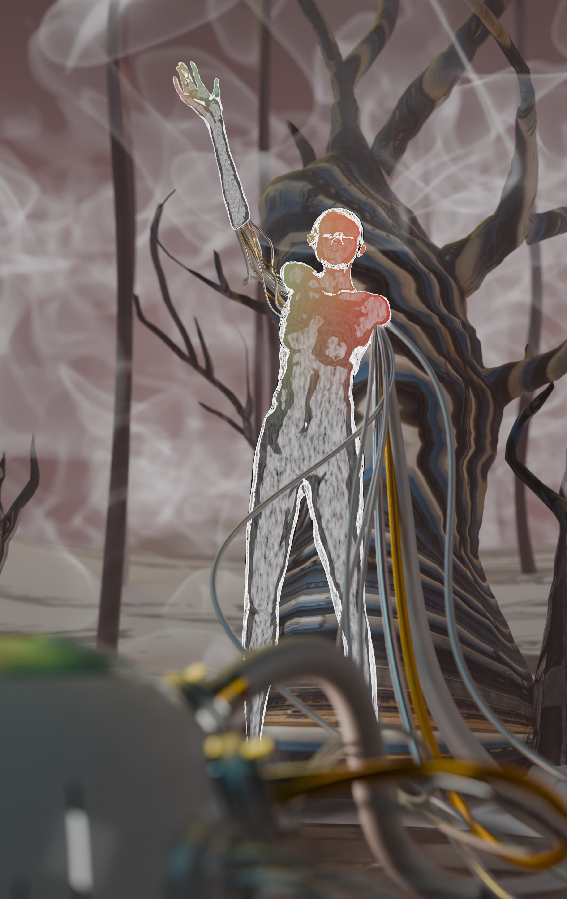
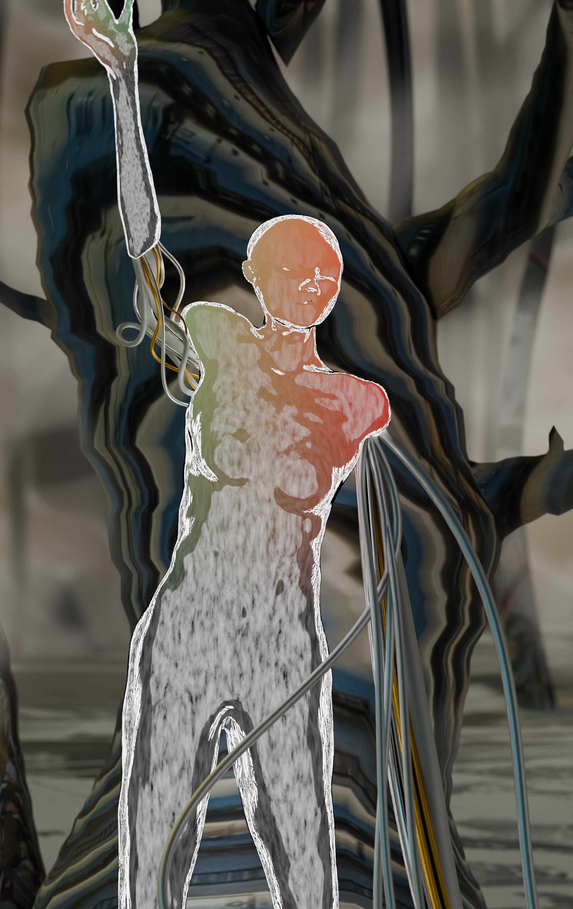
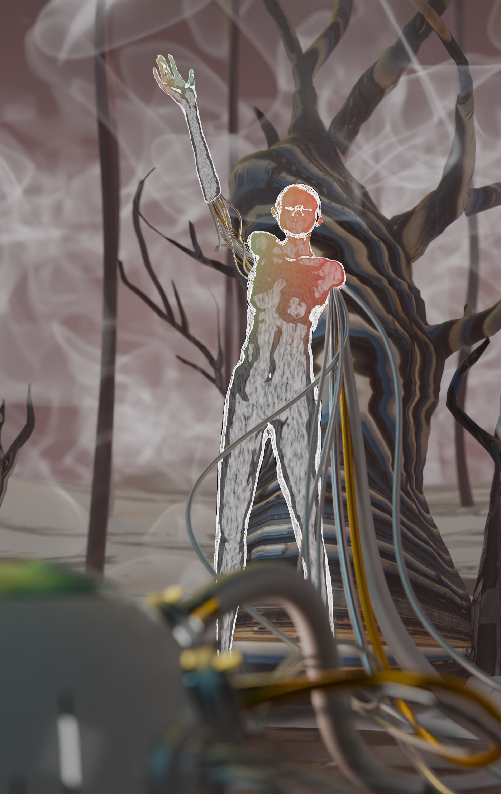
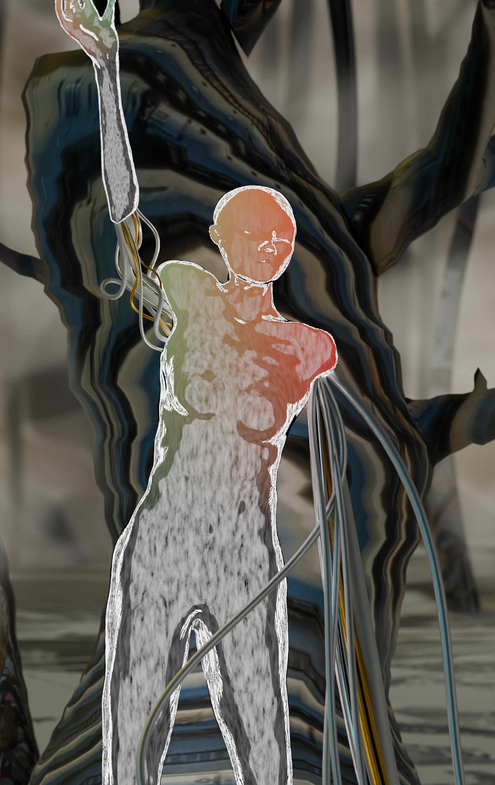

CopyLoop (Group Project)
我参加了朋友Abby Guan组织的Copy Loop。从Abby的一张painting开始，我们按照顺序用自己的方式来复制前一个人复制的作品作品。这种copy以主观感受为主，且所有人都只能看到前一个人创作了什么，因此我认为这个迭代过程很有意思。
I took part in a Copy Loop that was organized by my friend Abby Guan. The loop involved a group of people. Started with Abby’s painting, we all copied a painting that was created by the person before us. This kind of copy is subjective, and each person can only see the previous person’s work. I find this iterative process very interesting.
我临摹的这幅作品给我的感觉既被束缚又充满力量。黑白照片中央的女人似乎被绑在树干上，但也像大地母亲一样，伸出手来汇一切力量。位于水路相连处都球体就像一个眼球，或是一个聚集着神秘力量的圣物。根据我的第一感觉和主观理解，我使用Blender创建了这样一个场景，主体结构与前作相似，纹理则力求抽象和神秘。
The piece I copied gave me the feeling of both restrained and empowered. The woman in the center of the black-and-white picture appears to be tied to a trunk, but also like the Mother Earth, she reaches out to gather the power of everything. The sphere on the ground where the land and water connect is like an eyeball or a sacred object that gathers mysterious powers. Based on my first feeling and subjective understanding, I create such a scene using Blender. The main structure is similar to the previous work, and the textures are trying to be abstract and mysterious.
04.2024.
technical tools: Blender, PR